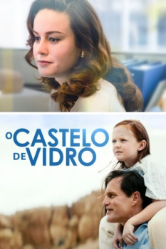

O Castelo de Vidro (2017)


O lar vai para onde nós formos.

Avaliação (TMDb):


7.0/10 (532 votos)
Avaliação (Usuário):
Outro Título:The Glass Castle
País:United States, 127 minutos
Idiomas falados:Inglês, Português
Gênero(s):Drama
Diretor(s):Destin Daniel Cretton
Codec:MPEG-2 (DVD)
Número: 3515
Sinopse:
Uma jovem menina atinge a maioridade numa família disfuncional de nómadas inconformados, com uma mãe que é uma artista excêntrica e um pai alcoólatra que tenta despertar a imaginação das crianças com a esperança que elas se abstraiam da pobreza em que vivem.
Elenco:
Brie Larson, Woody Harrelson, Naomi Watts, Max Greenfield, Sarah Snook, Ella Anderson, Chandler Head, Olivia Kate Rice, Sadie Sink, Josh Caras
Tipo de mídia: DVD5,
Legendas: Português
Alugado: Não
Tela: Anamorphic Widescreen